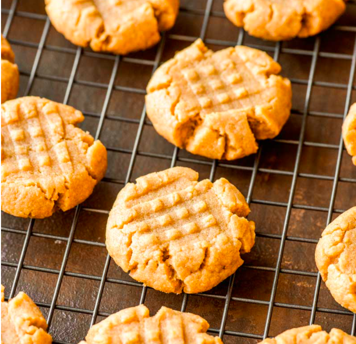

Four Ingredient Penut Butter Cookies

Ingredients
- 1 cup granulated sugar
- 1 cup penut butter
- 1 large egg
- 1 tsp vanilla extract
Directions
- preheat oven to 350 degrees F
- mix together sugar, penut butter, egg, and vanilla extract
- scoop dough into 1 tablespoon rounds and place on lined baking sheet
- bake the cookies for 10 to 12 Min
- let the cookies cool for 5-10 minutes
Visit the full recipe page here!
Contact Me
email me for questions
layne.cooper@umontana.edu
32 Campus Drive
Missoula, MT 59801